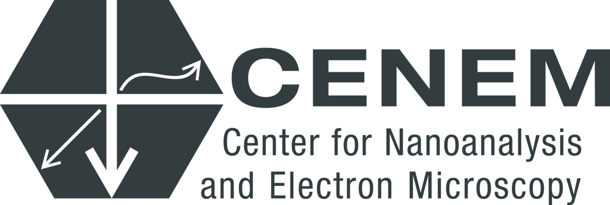
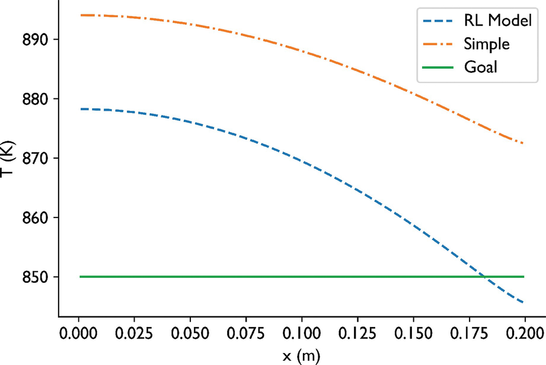
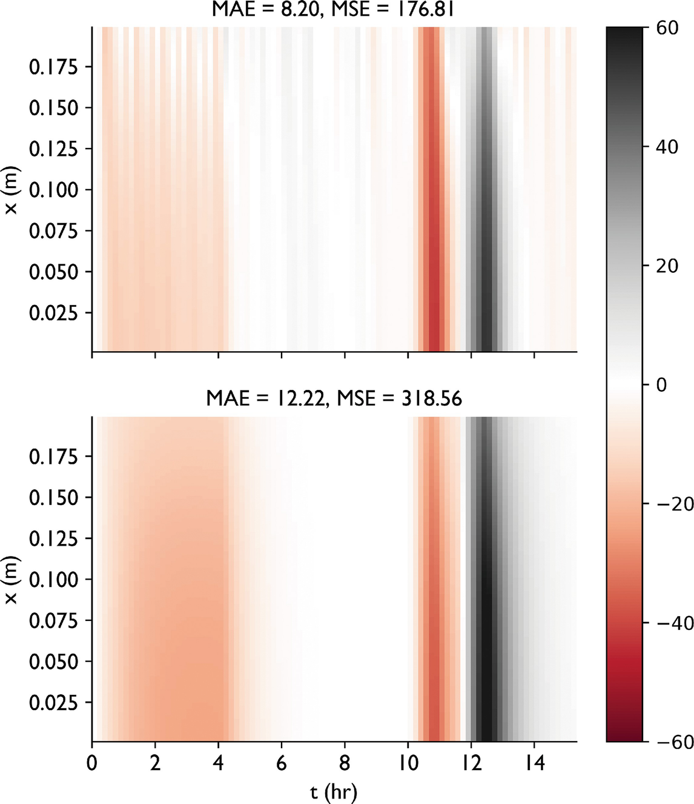

Machine Learning for Characterization and Processing
Unit 11: Automation in microscopy and characterization
AI 4 Materials / KI-Materialtechnologie




What is Reinforcement Learning?
- (McClarren Ch 9.1)
- Learning by Trial and Error.
- No labels needed! Only a Reward Signal.
- Agent (ML Model) \(\leftrightarrow\) Environment (The Microscope).

Key Components: State, Action, Reward
- State: What the microscope “sees” (current image/signal).
- Action: What the agent “does” (change lens current, move stage).
- Reward: A scalar indicating how “good” the action was.
- Policy \(\pi(s)\): Mapping from state to action.

RL Control Strategy
- Physics: Coupled Radiation and Diffusion PDEs.
- Input: Current Temp, Target Temp (Future).
- Action: Change boundary temperature \(\Delta u\).
- Reward: Inverse of squared difference from target.



- Outcome: RL learns to “overheat” to reach targets faster, discovering system lags.
Example Notebook
Week 11: Anomaly Detection via Autoencoder — CahnHilliardDataset